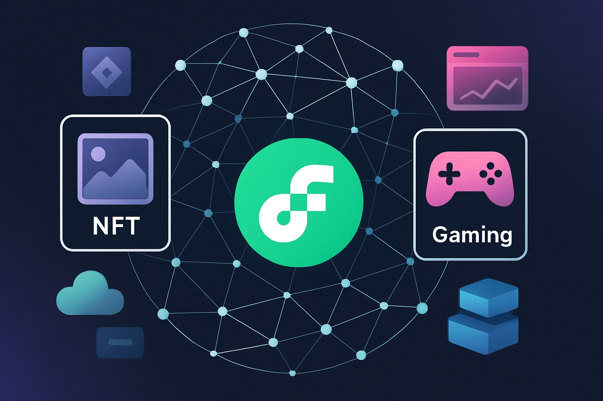

Flow Price Forecast for Late 2025: Comprehensive Review and Key Insights
This content is provided solely for educational purposes and should not be taken as investment advice. Cryptocurrency investments involve significant risk.
Introduction
As of August 20, 2025, 01:12 AM EEST, Flow (FLOW) trades near $0.55 and continues to establish itself as a premier layer-1 blockchain designed for NFTs, gaming, and digital collectibles. Created by Dapper Labs, Flow focuses on high throughput and user-friendly applications, powering projects such as NBA Top Shot and NFL All Day. Its unique multi-node structure delivers scalability while preserving decentralization, reinforcing its importance within the Web3 landscape. This article examines FLOW’s price prospects heading into late 2025, analyzing both optimistic and pessimistic scenarios, the main catalysts for growth, and potential threats in light of current trends and ecosystem progress.
Current Situation
On August 20, 2025, Flow is priced at about $0.55, marking a 22% rise from June 2025, when it hovered near $0.45. Over the past month, FLOW has demonstrated steady performance, closing in positive territory on 55% of trading days and showing 5.2% volatility. With the Fear and Greed Index at 68, investor sentiment appears confident, fueled by Flow’s growing use in NFT platforms, gaming ecosystems, and partnerships with high-profile sports and entertainment brands. Over twelve months, the token has climbed from $0.38 — a 45% increase. Since debuting in 2020 at $0.10, FLOW’s value has expanded by 450%, supported by its focus on consumer-oriented blockchain solutions and a rapidly maturing developer base.
Price Predictions for End of 2025
Expert projections for Flow’s price in December 2025 differ depending on overall market conditions and ecosystem growth. Bearish expectations point to a possible drop toward $0.35 if an anticipated 30–50% correction occurs in early 2025. More conservative outlooks suggest FLOW stabilizing between $0.65 and $0.90, underpinned by continued adoption across NFTs and gaming. Optimistic estimates see FLOW reaching $1.10–$1.50 if markets recover strongly between February and April 2025. Some analysts believe Flow could hit around $0.85 by October 2025, assuming demand for NFT and gaming projects keeps rising.
Factors Driving Price Growth
- NFT and Gaming Expansion: Flow’s dominant position in NFTs and blockchain gaming, with flagship apps like NBA Top Shot, continues to boost user activity and attract developers.
- Web3 Adoption: Flow’s integration into user-oriented Web3 applications strengthens its practical utility and market presence.
- Major Partnerships: Deals with well-known sports and entertainment organizations, including the NBA and NFL, help Flow gain mainstream recognition.
- Market Upswing: A projected cryptocurrency rally during early 2025 — especially from February to April — could provide strong upward momentum for FLOW.
- Efficient Architecture: The network’s multi-node framework delivers speed and scalability, appealing to teams building performance-intensive dApps.
Risks and Downward Factors
- Market Fluctuations: A 30–50% correction in early 2025 could weigh heavily on FLOW’s value and dampen investor confidence.
- Regulatory Challenges: Tighter oversight on cryptocurrencies and NFTs worldwide may restrict Flow’s accessibility and hinder its expansion.
- Competitive Pressure: Rivals such as Ethereum, Solana, and Immutable X could limit Flow’s market share in NFTs and blockchain gaming.
Volatility Analysis
Between July and August 2025, Flow climbed from $0.45 to $0.55 — a 22% increase — while maintaining 5.2% volatility, showing relative stability compared to prior performance. Annual growth of 45% highlights FLOW’s robust trajectory. Technical signals, including bullish trends in its 50-day and 200-day EMAs, indicate ongoing upward potential. A market rebound expected in early 2025 could further aid price appreciation, particularly as Flow extends its reach in NFTs and gaming. Its scalable design and strong brand alliances make it well positioned for sustained momentum.

Conclusion
By late 2025, Flow’s value is expected to land in the $0.65–$1.10 range, with a chance of touching $1.50 if market conditions turn strongly bullish, driven by NFT adoption, gaming integration, and strategic partnerships. Nonetheless, investors should stay alert to potential volatility, evolving regulations, and intense industry competition. Careful research and solid risk management remain vital before committing funds to FLOW.